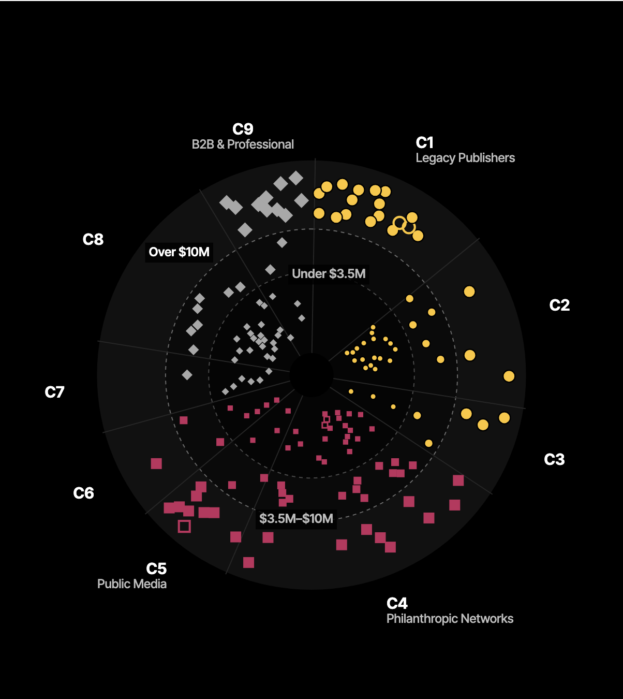

Governance. Nine wedges, one per cohort: who owns it, who decides, how it is funded. Legacy Publishers: 18 of 18 over $10M. Civic & Community: 0 of 27.
Journalism as most people picture itHow public-minded funding becomes reportingNew ways audiences and markets pay directlyClosedCloser to the center, smaller budget: under $3.5M, $3.5M–$10M, over $10M. Bigger marks are in bigger bands.
- C1 Legacy Publishers18
- C2 Creator Brands26
- C3 Barbell Hybrids8
- C4 Philanthropic Networks44
- C5 Public Media14
- C6 Collaboration Layers8
- C7 Worker Co-ops7
- C8 Civic & Community27
- C9 B2B & Professional17
List view
| Organization | Cohort | Revenue band | Started | Over $10M | Note |
|---|---|---|---|---|---|
| New York Times | C1 Legacy Publishers | Over $10M | 1851 | Already above | |
| The Atlantic | C1 Legacy Publishers | Over $10M | 1857 | Already above | |
| Unverified organization | C1 Legacy Publishers | Over $10M | Figure unverified | ||
| Fox News / Fox Corp | C1 Legacy Publishers | Over $10M | 1996 | Already above | proxy or historical figure |
| CNN (Warner Bros. Discovery) | C1 Legacy Publishers | Over $10M | 1980 | Already above | |
| MS NOW (formerly MSNBC) | C1 Legacy Publishers | Over $10M | 1996 | Already above | |
| LA Times | C1 Legacy Publishers | Over $10M | 1881 | Already above | |
| Nexstar | C1 Legacy Publishers | Over $10M | 1996 | Already above | proxy or historical figure |
| TelevisaUnivision | C1 Legacy Publishers | Over $10M | 1962 | Already above | proxy or historical figure |
| Reuters Agency | C1 Legacy Publishers | Over $10M | 1851 | Already above | proxy or historical figure |
| AP Wire Service | C1 Legacy Publishers | Over $10M | 1846 | Already above | |
| Epoch Times | C1 Legacy Publishers | Over $10M | 2000 | Ideology (grew past it) | |
| Tangle (Isaac Saul) | C2 Creator Brands | $3.5M–$10M | 2019 | ||
| The Dispatch | C2 Creator Brands | $3.5M–$10M | 2019 | ||
| Popular Information (Judd Legum) | C2 Creator Brands | Under $3.5M | 2018 | ||
| Silver Bulletin (Nate Silver) | C2 Creator Brands | Under $3.5M | 2023 | ||
| The Daily Wire (Ben Shapiro) | C2 Creator Brands | Over $10M | 2015 | Ideology (grew past it) | |
| Pod Save America / Crooked Media | C2 Creator Brands | Over $10M | 2017 | Team + portfolio (grew past it) | |
| Joe Rogan Experience | C2 Creator Brands | Over $10M | 2009 | Exception (grew past it) | |
| The Bulwark | C2 Creator Brands | $3.5M–$10M | 2018 | ||
| The Contrarian (Rubin/Eisen) | C2 Creator Brands | Under $3.5M | 2025 | ||
| Semafor (Ben Smith) | C3 Barbell Hybrids | Over $10M | 2022 | Team + portfolio (grew past it) | |
| Puck | C3 Barbell Hybrids | Over $10M | 2021 | Team + portfolio (grew past it) | acquired |
| Platformer (Casey Newton) | C3 Barbell Hybrids | Under $3.5M | 2020 | ||
| The Free Press (Bari Weiss) | C3 Barbell Hybrids | Over $10M | 2022 | Team + portfolio (grew past it) | acquired |
| ProPublica | C4 Philanthropic Networks | Over $10M | 2008 | Already above | |
| Texas Tribune | C4 Philanthropic Networks | Over $10M | 2009 | Diversified (grew past it) | |
| States Newsroom | C4 Philanthropic Networks | Over $10M | 2017 | Team + portfolio (grew past it) | |
| The 19th | C4 Philanthropic Networks | Over $10M | 2020 | Diversified (grew past it) | |
| Chalkbeat / Civic News Co. | C4 Philanthropic Networks | Over $10M | 2009 | Philanthropy (grew past it) | |
| The Marshall Project | C4 Philanthropic Networks | Over $10M | 2012 | Philanthropy (grew past it) | |
| Capital B | C4 Philanthropic Networks | $3.5M–$10M | 2022 | ||
| Center for Public Integrity | C4 Philanthropic Networks | Under $3.5M | 1989 | closed | |
| OCCRP | C4 Philanthropic Networks | Over $10M | 2006 | Philanthropy (grew past it) | |
| NPR (network) | C5 Public Media | Over $10M | 1970 | Already above | |
| WNYC | C5 Public Media | Over $10M | 1924 | Already above | |
| WBEZ / Chicago Public Media | C5 Public Media | Over $10M | 1943 | Already above | |
| CPB (dissolved) | C5 Public Media | Over $10M | 1967 | Already above | closed; proxy or historical figure |
| ICIJ | C6 Collaboration Layers | $3.5M–$10M | 1997 | ||
| URL Media | C6 Collaboration Layers | Under $3.5M | 2021 | ||
| Word In Black | C6 Collaboration Layers | Under $3.5M | 2021 | ||
| Defector (Year 5) | C7 Worker Co-ops | $3.5M–$10M | 2020 | ||
| 404 Media | C7 Worker Co-ops | Under $3.5M | 2023 | ||
| Aftermath | C7 Worker Co-ops | Under $3.5M | 2023 | ||
| El Tímpano | C8 Civic & Community | Under $3.5M | 2018 | ||
| City Bureau / Documenters | C8 Civic & Community | $3.5M–$10M | 2015 | ||
| Outlier Media | C8 Civic & Community | Under $3.5M | 2016 | ||
| Documented NYC | C8 Civic & Community | $3.5M–$10M | 2019 | ||
| NJ Civic Information Consortium | C8 Civic & Community | $3.5M–$10M | 2018 | ||
| Nowruz Media (Faisal Karimi) | C8 Civic & Community | Under $3.5M | 2024 | ||
| Afghanistan Women's News Agency | C8 Civic & Community | Under $3.5M | 2016 | ||
| Politico Pro | C9 B2B & Professional | Over $10M | 2011 | B2B (grew past it) | |
| Industry Dive | C9 B2B & Professional | Over $10M | 2012 | B2B (grew past it) | |
| Morning Brew (Axel Springer) | C9 B2B & Professional | Over $10M | 2015 | Team + portfolio (grew past it) | |
| The Information | C9 B2B & Professional | Over $10M | 2013 | B2B (grew past it) | |
| STAT News | C9 B2B & Professional | Over $10M | 2015 | B2B (grew past it) | |
| American City Business Journals | C9 B2B & Professional | Over $10M | 1982 | B2B (grew past it) | proxy or historical figure |
| Consumer Reports | C9 B2B & Professional | Over $10M | 1936 | Already above | |
| Stratechery (Ben Thompson) | C9 B2B & Professional | $3.5M–$10M | 2013 | ||
| Pragmatic Engineer (Gergely Orosz) | C9 B2B & Professional | Under $3.5M | 2021 | ||
| TBPN (acquired by OpenAI) | C2 Creator Brands | $3.5M–$10M | 2024 | acquired | |
| Wall Street Journal / News Corp | C1 Legacy Publishers | Over $10M | 1889 | Already above | proxy or historical figure |
| Axios | C1 Legacy Publishers | Over $10M | 2016 | Team + portfolio (grew past it) | |
| BuzzFeed News | C1 Legacy Publishers | Over $10M | 2006 | Team + portfolio (grew past it) | closed; proxy or historical figure |
| Vice Media / Motherboard | C1 Legacy Publishers | Over $10M | 1994 | Team + portfolio (grew past it) | closed; proxy or historical figure |
| Extra Points (Matt Brown) | C2 Creator Brands | Under $3.5M | 2019 | ||
| Anne Helen Petersen / Culture Study | C2 Creator Brands | Under $3.5M | 2020 | ||
| Spotlight PA | C4 Philanthropic Networks | $3.5M–$10M | 2019 | ||
| Radio Jornalera NJ | C8 Civic & Community | Under $3.5M | proxy or historical figure | ||
| Gannett Co. Inc. (GCI) | C1 Legacy Publishers | Over $10M | 1906 | Already above | proxy or historical figure |
| Baltimore Banner | C1 Legacy Publishers | Over $10M | 2022 | Already above | |
| CalMatters | C4 Philanthropic Networks | Over $10M | 2015 | Philanthropy (grew past it) | |
| The Trace | C4 Philanthropic Networks | $3.5M–$10M | 2015 | ||
| American Prospect | C4 Philanthropic Networks | Under $3.5M | 1990 | ||
| The Markup (acquired by CalMatters) | C4 Philanthropic Networks | Under $3.5M | 2015 | absorbed | |
| KQED (San Francisco) | C5 Public Media | Over $10M | 1954 | Already above | |
| Racket (Minneapolis) | C7 Worker Co-ops | Under $3.5M | 2021 | ||
| Block Club Chicago | C8 Civic & Community | $3.5M–$10M | 2018 | ||
| Injustice Watch | C8 Civic & Community | Under $3.5M | 2014 | ||
| Lenny's Newsletter (Lenny Rachitsky) | C9 B2B & Professional | Under $3.5M | 2019 | ||
| The Diff (Byrne Hobart) | C9 B2B & Professional | Under $3.5M | 2019 | ||
| Amanda Montei (Mad Woman) | C2 Creator Brands | Under $3.5M | 2021 | ||
| Jonathan P. Thompson (The Land Desk) | C2 Creator Brands | Under $3.5M | 2021 | ||
| Jacqueline Nesi (Techno Sapiens) | C2 Creator Brands | Under $3.5M | 2022 | ||
| Ethan Mollick (One Useful Thing) | C2 Creator Brands | Under $3.5M | 2022 | ||
| Trung Phan (Finance/Economics) | C2 Creator Brands | Under $3.5M | 2021 | ||
| Bill McBride (CalculatedRisk) | C2 Creator Brands | Under $3.5M | 2005 | ||
| MuckRock Foundation | C4 Philanthropic Networks | $3.5M–$10M | 2012 | ||
| Scalawag | C4 Philanthropic Networks | Under $3.5M | 2015 | ||
| Mississippi Today / Deep South Today | C4 Philanthropic Networks | $3.5M–$10M | 2016 | ||
| Jewish Currents / APJS | C4 Philanthropic Networks | Under $3.5M | 1946 | ||
| Prism Reports | C4 Philanthropic Networks | Under $3.5M | 2018 | ||
| The 74 Media | C4 Philanthropic Networks | Under $3.5M | 2015 | ||
| In These Times (Institute for Public Affairs) | C4 Philanthropic Networks | Under $3.5M | 1976 | ||
| Bolts (Political Report Inc) | C4 Philanthropic Networks | Under $3.5M | 2022 | ||
| The Lever (David Sirota) | C2 Creator Brands | Under $3.5M | 2021 | ||
| HEATED (Emily Atkin) | C2 Creator Brands | Under $3.5M | 2019 | ||
| Garbage Day (Ryan Broderick) | C2 Creator Brands | Under $3.5M | 2019 | ||
| Truthout | C4 Philanthropic Networks | Under $3.5M | 2001 | ||
| The Appeal (Appeal Inc → Truthout) | C4 Philanthropic Networks | Under $3.5M | 2001 | ||
| The Correspondent (English edition) | C4 Philanthropic Networks | Under $3.5M | 2019 | closed | |
| First Look Institute / The Intercept | C4 Philanthropic Networks | Under $3.5M | 2013 | ||
| The Intercept (standalone) | C4 Philanthropic Networks | $3.5M–$10M | 2014 | ||
| Cityside Journalism (Berkeleyside / Oaklandside) | C8 Civic & Community | $3.5M–$10M | 2009 | ||
| Resolve Philadelphia | C8 Civic & Community | Under $3.5M | 2018 | ||
| Hell Gate | C7 Worker Co-ops | Under $3.5M | 2022 | ||
| Discourse Blog | C7 Worker Co-ops | Under $3.5M | 2020 | ||
| Center for Investigative Reporting / Mother Jones | C4 Philanthropic Networks | Over $10M | 1975 | Philanthropy (grew past it) | |
| Honolulu Civil Beat | C4 Philanthropic Networks | $3.5M–$10M | 2010 | ||
| GroundTruth Project / Report for America | C6 Collaboration Layers | Over $10M | 2014 | Philanthropy (grew past it) | |
| Bridge Michigan (Center for Michigan) | C4 Philanthropic Networks | $3.5M–$10M | 2011 | ||
| CT Mirror (Connecticut News Project) | C4 Philanthropic Networks | $3.5M–$10M | 2010 | ||
| MinnPost | C4 Philanthropic Networks | Under $3.5M | 2007 | ||
| Texas Observer (Texas Democracy Foundation) | C4 Philanthropic Networks | Under $3.5M | 1954 | ||
| The Ankler (Janice Min) | C9 B2B & Professional | $3.5M–$10M | 2020 | ||
| Zeteo (Mehdi Hasan) | C3 Barbell Hybrids | $3.5M–$10M | 2024 | ||
| Heather Cox Richardson / Letters from an American | C2 Creator Brands | $3.5M–$10M | 2019 | ||
| Slow Boring (Matthew Yglesias) | C2 Creator Brands | Under $3.5M | 2020 | ||
| The 51st (DC nonprofit co-op) | C7 Worker Co-ops | Under $3.5M | 2024 | ||
| Signal Ohio (Signal Foundation) | C4 Philanthropic Networks | $3.5M–$10M | 2022 | ||
| NOTUS / Allbritton Journalism Institute | C4 Philanthropic Networks | Over $10M | 2024 | Philanthropy (grew past it) | |
| Sahan Journal | C4 Philanthropic Networks | Under $3.5M | 2019 | ||
| Colorado Sun | C4 Philanthropic Networks | $3.5M–$10M | 2018 | ||
| Nevada Independent | C4 Philanthropic Networks | Under $3.5M | 2017 | ||
| Wisconsin Watch | C4 Philanthropic Networks | $3.5M–$10M | 2009 | ||
| VTDigger (Vermont Journalism Trust) | C4 Philanthropic Networks | Under $3.5M | 2009 | ||
| Enlace Latino NC | C8 Civic & Community | Under $3.5M | 2018 | ||
| IndiJ Public Media (Indian Country Today / ICT) | C8 Civic & Community | $3.5M–$10M | 1981 | ||
| India Currents Foundation | C8 Civic & Community | Under $3.5M | 1987 | ||
| Cicero Independiente | C8 Civic & Community | Under $3.5M | 2019 | ||
| Migrant Roots Media | C8 Civic & Community | Under $3.5M | 2021 | ||
| LION Publishers | C6 Collaboration Layers | $3.5M–$10M | 2012 | ||
| Colorado News Collaborative (COLab) | C6 Collaboration Layers | Under $3.5M | 2020 | ||
| Oklahoma Media Center | C6 Collaboration Layers | Under $3.5M | 2020 | ||
| Granite State News Collaborative | C6 Collaboration Layers | Under $3.5M | 2018 | ||
| KUOW (Seattle) | C5 Public Media | Over $10M | 1952 | Already above | |
| Colorado Public Radio | C5 Public Media | Over $10M | 1970 | Already above | |
| St. Louis Public Radio | C5 Public Media | $3.5M–$10M | 1972 | ||
| Nashville Public Radio | C5 Public Media | $3.5M–$10M | 1962 | ||
| Iowa Public Radio | C5 Public Media | Over $10M | 2004 | Already above | |
| LAist / Southern California Public Radio | C5 Public Media | Over $10M | 1957 | Already above | |
| WOJB (Lac Courte Oreilles Ojibwe, Hayward WI) | C5 Public Media | Under $3.5M | 1982 | ||
| KILI Radio (Pine Ridge/Oglala Lakota, Porcupine SD) | C5 Public Media | Under $3.5M | 1983 | ||
| KRZA (Alamosa CO) | C5 Public Media | Under $3.5M | 1985 | ||
| New Mexico In Depth | C4 Philanthropic Networks | Under $3.5M | 2012 | ||
| Charlottesville Tomorrow | C4 Philanthropic Networks | Under $3.5M | 2005 | ||
| IowaWatch (Iowa Center for Public Affairs Journalism) | C4 Philanthropic Networks | Under $3.5M | 2010 | absorbed; proxy or historical figure | |
| Voice of San Diego | C4 Philanthropic Networks | $3.5M–$10M | 2005 | ||
| Indigenous Media Freedom Alliance (Buffalo's Fire) | C8 Civic & Community | Under $3.5M | 2016 | ||
| Asian American Media Inc (AsAmNews) | C8 Civic & Community | Under $3.5M | 2011 | ||
| Voice News Network Inc (The Atlanta Voice) | C8 Civic & Community | Under $3.5M | 1966 | ||
| E&E News | C9 B2B & Professional | Over $10M | 1998 | B2B (grew past it) | absorbed |
| Unverified organization | C9 B2B & Professional | Over $10M | Figure unverified | ||
| Unverified organization | C9 B2B & Professional | Over $10M | Figure unverified | ||
| Defense One / GovExec | C9 B2B & Professional | Over $10M | 2013 | B2B (grew past it) | proxy or historical figure |
| Breaking Points (Krystal Ball & Saagar Enjeti) | C3 Barbell Hybrids | $3.5M–$10M | 2021 | ||
| Status (Oliver Darcy) | C3 Barbell Hybrids | Under $3.5M | 2024 | ||
| Newcomer (Eric Newcomer) | C3 Barbell Hybrids | Under $3.5M | 2020 | ||
| Nichi Bei Foundation (Nichi Bei News) | C8 Civic & Community | Under $3.5M | 2009 | ||
| International Examiner | C8 Civic & Community | Under $3.5M | 1974 | ||
| Borderless Magazine | C8 Civic & Community | Under $3.5M | 2017 | ||
| Latino Media Collaborative (CALO News) | C8 Civic & Community | Under $3.5M | 2022 | ||
| Native Media Resource Center (KGUA / Indigenous News) | C8 Civic & Community | Under $3.5M | 1997 | ||
| Noahpinion (Noah Smith) | C2 Creator Brands | Under $3.5M | 2020 | ||
| Astral Codex Ten (Scott Alexander) | C2 Creator Brands | Under $3.5M | 2021 | ||
| Freddie deBoer | C2 Creator Brands | Under $3.5M | 2021 | ||
| Doomberg | C9 B2B & Professional | Under $3.5M | 2021 | ||
| New Haven Independent / Online Journalism Project | C8 Civic & Community | $3.5M–$10M | 2005 | ||
| The Lens (New Orleans) | C8 Civic & Community | Under $3.5M | 2009 |
Each mark is one organization
Colour and shape show which of three governance groups it belongs to. Hover or tap a mark for its name, cohort and band.
Distance from the center is budget
Three bands: under $3.5M at the center, $3.5M–$10M, and over $10M at the edge. Inside a band, marks are placed by rank, never by dollar value. In “When they started”, distance means founding year instead.
Lenses re-sort the same marks
Where marks travel together, governance predicts. Where they scatter, it does not. Source: Nodes and Networks (Knight Center, ASU Cronkite, with the Independent Journalism Atlas), dataset v22.